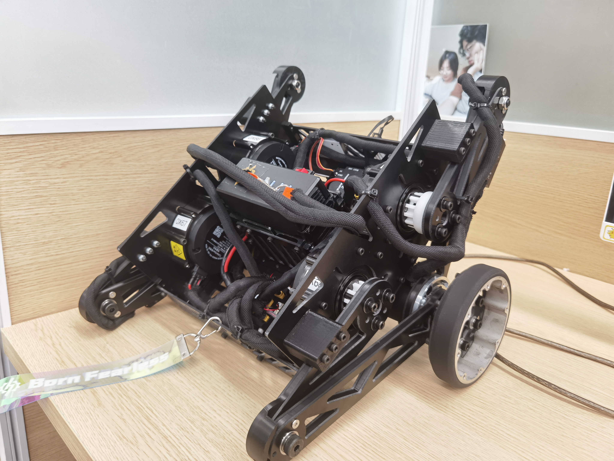

目录
轮腿机器人相关说明
整机图片

正方向定义
底盘结构体从属关系

控制方式说明
机器人左右两腿皆从左视图参照正方向定义中控制两腿，参考示意图：
项目系统与功能设计
机械设计

五连杆机器人腿是一种常见的机械结构，具有一些优势，特别适用于复杂的应用场景。
稳定性： 五连杆结构可以提供较好的稳定性，使得机器人在行走或运动时更加平稳。这对于需要在不同地形或工作环境中移动的机器人尤为重要。
适应性强： 五连杆机器人腿的设计使得机器人能够适应不同高度和倾斜角度的地面。这种灵活性使得机器人能够在多样化的环境中行动，从而拓展了其应用领域。
精准控制： 五连杆结构提供了较好的关节控制，使得机器人能够在移动和定位过程中实现更为精准的运动。这对于执行复杂任务或避开障碍物非常有帮助。
有效载荷能力： 由于五连杆机器人腿的结构稳定，它通常具有较高的有效载荷能力。这使得机器人能够携带更多的设备、传感器或负载，扩展了其应用范围。
节省空间： 五连杆腿结构通常能够以较小的空间实现较大的运动范围，这对于有限空间内的机器人应用尤为重要，如在狭窄的通道中行走或执行任务。
可编程性： 五连杆机器人腿的关节可编程性较高，使得开发人员可以更容易地实现各种运动模式和行为，从而适应不同的任务需求。
总体而言，五连杆机器人腿的优势在于其结构稳定性、适应性强、精准控制和较高有效载荷能力。
机械参数
尺寸相关
| 部件名称 | 数值 | 单位 |
|---|---|---|
| 杆L1 | 0.11 | m |
| 杆L2 | 0.18 | m |
| 杆L3 | 0.18 | m |
| 杆L4 | 0.11 | m |
| 杆L5 | 0.09 | m |
| 驱动轮半径 | 0.05 | m |
| 底盘绕Z轴旋转半径 | 0.1577 | m |
| 大腿趴下机械限位 | 0.10472 | rad |
质量相关
| 部件名称 | 数值 | 单位 |
|---|---|---|
| 整车 | 4.635 | kg |
| 轮子 | 0.183 | kg |
| 单腿 | 0.715 | kg |
| 车体 | 2.839 | kg |
硬件设计
整机硬件框图

轮子驱动电机电子调速器CAN总线直接连接主控板，接入CAN1网络；关节电机发送扩展帧优先级较低，为了避免丢失数据，将四个关节电机单独接入CAN2网络，并通过中心板连接主控板。
软件设计
系统架构
机器人的主控程序采用相同的驱动层和整体架构。主控程序以 FreeRTOS 作为片上操作系统，实现多线程间的调度和通信。FreeRTOS 操作系统是一个轻量级的操作系统，提供了线程管理、时间管理、内存管理等。

运行流程

底盘任务流程

腿部控制处理中，chassis_forward_kinematics()先结算处虚拟腿姿态；chassis_K_matrix_fitting()根据虚拟腿长进行LQR的K矩阵拟合；off_ground_detection()根据腿部支持力判断是否离线以及进行离线处理；jump_handle()在接到跳跃命令之后进行跳跃处理；state_variable_reference相关函数进行状态变量的期望、反馈、误差获取并在motors_torque_cal()中计算电机期望转矩；vmc_inverse_solution()进行运动学和动力学逆解；最后fn_cal()进行支持力计算。
离线检测任务流程

功能设计
移动控制
机器人可以在保持机体Pitch轴稳定的情况下进行移动和旋转运动。

自由度控制
Pitch、Yaw、Roll三轴自由度调节，并配合腿部控制完成Z轴升降。

适应性控制
复杂路面上的自适应，能完成Roll轴自稳，下台阶冲击抵抗，转向重心偏移。

操作控制
能在一个遥控器上实现所有操作，能够检测机器人是否离地，能稳定自启。

抗干扰能力
遇到持续外力和突发冲撞能保持稳定。

跳跃
能够稳定跳跃，实现原地跳跃和向前跳跃。